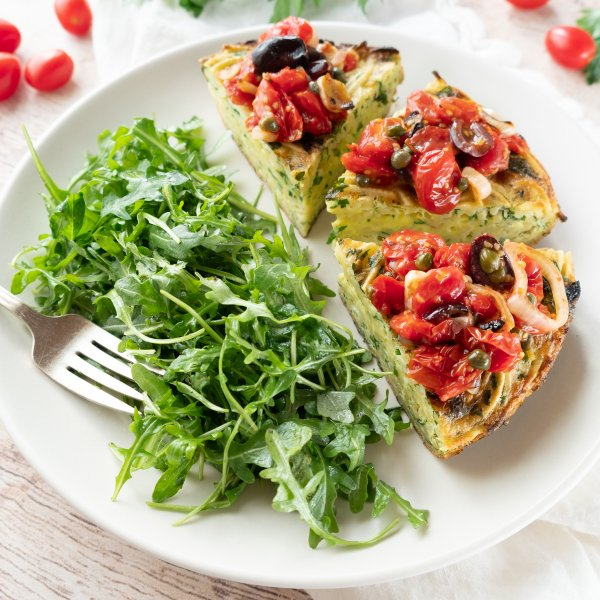

Pasta Frittata with Warm Puttanesca Sauce & Basil-Arugula Salad

Nutrition (per serving)
644.1 kcalCalories
29.9 gProtein
58 gCarbs
33 gFat
Full nutrition table
| Calories | 644.1 kcal |
| Total fat | 33 g |
| Saturated fat | 8.1 g |
| Trans fat | 0.2 g |
| Cholesterol | 418.8 mg |
| Sodium | 334.2 mg |
| Carbohydrates | 58 g |
| Fiber | 5.6 g |
| Sugars | 9.1 g |
| Protein | 29.9 g |
| Potassium | 938.3 mg |
| Calcium | 195.8 mg |
| Iron | 6.5 mg |
| Vitamin A | 1895.6 IU |
| Vitamin C | 52.9 mg |
| Vitamin D | 92.9 IU |
Cookware
Ingredients
- 1 (5 oz) pkgbaby arugula
- 2 tbspcapers
- 10eggs
- 1 small pkgfresh basil
- 4 clovesgarlic
- 2 pintsgrape tomatoes
- 1 small bunchItalian (flat-leaf) parsley
- ¼ cupKalamata olives, pitted
- 1lemon
- 2 ozParmesan cheese
- 2shallots
- 8 ozspaghetti pasta
- black pepper
- crushed red pepper
- extra virgin olive oil
- Italian seasoning
- pure maple syrup
- salt
Steps
- Fill a large pot halfway with hot water (from the tap), cover, and bring to a boil. Uncover, add salt and pasta, and stir for a few seconds. Cook until desired firmness, 8-10 minutes. Drain and rinse pasta in a colander and set aside.2 tsp salt
8 oz spaghetti pasta - Wash and dry tomatoes; cut in half crosswise. Peel and thinly slice garlic. Peel and thinly slice shallots into rings.2 pints grape tomatoes
4 cloves garlic
2 shallots - Preheat a large ovenproof skillet over medium heat.
- Halve the olives lengthwise.¼ cup Kalamata olives, pitted
- Once the skillet is hot, add oil and swirl to coat the bottom. Add tomatoes, garlic, shallots, olives, capers, and spices. Cook, stirring often, until tomatoes begin to soften and make a chunky sauce, 5-6 minutes. Transfer to a serving bowl and cover with foil. Reserve skillet for the frittata.2 tbsp extra virgin olive oil
2 tbsp capers
½ tsp Italian seasoning
¼ tsp salt
¼ tsp crushed red pepper - Meanwhile, preheat oven to broil on high and position rack under the broiler.
- Wash and dry remaining fresh produce. (Skip the arugula if it came pre-washed.)1 small bunch Italian (flat-leaf) parsley
1 lemon
1 small pkg fresh basil
1 (5 oz) pkg baby arugula - Shave parsley leaves off the stems; discard the stems and mince the leaves. Transfer to a large bowl.
- Finely grate Parmesan; add to the bowl with the parsley along with the eggs, salt, and pepper; whisk to combine.2 oz Parmesan cheese
10 eggs
½ tsp salt
½ tsp black pepper - Return skillet (it doesn't have to be wiped clean) to medium heat.
- Transfer pasta to the bowl with the eggs and stir to combine.
- Once the skillet is hot, add oil and swirl to coat the bottom.4 tsp extra virgin olive oil
- Pour the egg-pasta mixture into the skillet and smooth out in an even layer. As eggs set around the edge of the skillet, gently lift cooked portions with a spatula to allow uncooked egg to flow underneath. Cook until bottom and sides are firm but the top is still runny, 6-8 minutes.
- Meanwhile, zest and juice lemon into a medium bowl. Add oil, maple syrup, salt, and pepper; whisk to combine the dressing.1 tbsp extra virgin olive oil
1 tsp pure maple syrup
¼ tsp salt
¼ tsp black pepper - Place skillet in the oven and cook until top is set and golden brown, 3-4 minutes. Remove from the oven and slice into wedges.
- Pick basil leaves off the stems; discard the stems and thinly slice the leaves into ribbons. Add basil and arugula to the bowl with the dressing and toss to combine the salad.
- Divide frittata and salad between plates and serve with warm puttanesca sauce. Enjoy!